HUANG LAB AT UCSF


Hirose, K.*, Chen, X.*, Kalyanaraman C, Waddingham MT, Nakamura M, Zhang F, Chen C, Yao S, Chang S, Yu H, Wang J, Barca E, Nakano H, Hsu A, Khyeam S, Gonzalez Ortega S, Tajima K, Yoneshiro T, Zhao H, Padmanabhan A, Kajimura S, Haldar S, Nakano A, Murai M, Fujihara Y, Otsu K, Quinzii CM, Jacobson MP, Hu G, Pearson JT, & Huang, G. N. (*, equal contribution) (Oct 2026)
A muscle enriched mitochondrial protein regulates postnatal heart growth through mitonuclear ubiquinone-PPAR signaling.
Proc. Natl. Acad. Sci. U.S.A. 123 (42) e2619615123 PDF
Chen, X., Zhong, X., Yue, W., Wang, B., Woo, B., Goodarzi, H., Luo, Z., Lu, Q. R., Flamant F., Reiter J. F., & Huang, G. N. (Mar 2026)
A transcription regulator atlas identifies TOX3 as an Atoh1 co-activator in cerebellar development and tumorigenesis.
Proc. Natl. Acad. Sci. U.S.A. 123 (12) e2527163123 PDF
Nakamura, M. & Huang, G. N. (Jun 2025)
Why some hearts heal and others don’t: the phylogenetic landscape of cardiac regenerative capacity
Semin Cell Dev Biol. 170: 103609 PDF
Chen, X., Zhong, X., & Huang, G. N. (Nov 2024)
Heart regeneration from the whole-organism perspective to single-cell resolution.
Npj Regenerative Medicine 9: 34 PDF
Payumo, A. Y.*, Chen, X.*, Hirose, K., Chen, X., Hoang, A., Khyeam, S., Yu, H., Wang, J., Chen, Q., Powers, N., Chen, L., Bigley, R. B., Lovas, J., Hu, G., & Huang, G. N. (*, equal contribution) (Sep 2021)
Adrenergic-thyroid hormone interactions drive postnatal thermogenesis and loss of mammalian heart regenerative capacity.
Circulation 144, 1000-1003 PDF
Payumo, A. Y. & Huang, G. N. (Apr 2020)
Lamin B2, guardian of cardiomyocyte nuclear division.
Developmental Cell 53:5-7 PDF
Hirose, K.*, Payumo, A. Y.*, Cutie, S., Hoang, A., Zhang, H., Lunn, D., Gu, L., Bigley, R. B., Yu, H., Wang, J., Smith, M., Gillett, E., Wilson, E., Field, K. A., Reeder, D. M., Maden, M., Yarsev, M. M., Grutzner, F., Scanlan, T. S., Flamant, F., Buffenstein, R., Hu, G., Olgin, J. E., & Huang, G. N. (*, equal contribution) (Mar 2019)
Evidence for hormonal control of heart regenerative capacity during endothermy acquisition.
Science 364:184-188 link PDF | Science News | Scientific American |UCSF News | Other News Outlets
-
-Perspective by Marchianò and Murry. Science link
-
-Editor’s summary. Science link
-
-Featured by Kiebs. Nature Reviews Endocrinology link
-
-Featured by Lal and Kühn. Circulation Research link
Cutie, S., Hoang, A. T., Payumo, A. Y., & Huang, G. N. (Dec 2017)
Unconventional functions of muscles in planarian regeneration.
Developmental Cell 43:657-658
Huang, G. N., Thatcher, J. E., McAnally, J., Kong, Y., Qi, X., Tan, W., DiMaio, M., Amatruda, J. F., Gerrard, G., Hill, J. A., Bassel-Duby, R. & Olson, E. N. (2012 Dec)
C/EBP transcription factors mediate epicardial activation during heart development and injury.
Science (Research Article). 338 (6114): 1599-1603. PDF PubMed
Song, K., Nam, Y., Luo, X., Qi, X., Tan, W., Huang, G. N., Acharya, A., Smith, C. L., Tallquist, M. D., Nelson, E. G., Hill, J., Bassel-Duby, R. & Olson, E. N. (2012 May)
Heart repair by expression of cardiac transcription factors in non-cardiomyocytes in vivo.
Nature (Research Article). 485(7400):599-604. PubMed
Huang, G. N. (2012 May)
T Cell Calcium Mobilization Study (Flow Cytometry).
Bio-protocol 2(9): e171. DOI: 10.21769/BioProtoc.171.
Huang, G. N. (2012 May)
Biotinylation of Cell Surface Proteins.
Bio-protocol 2(9): e170. DOI: 10.21769/BioProtoc.170.
Huang, G. N. (2012 Jan)
ELISA Measurement of Mouse IL-2.
Bio-protocol Bio101: e169. DOI: 10.21769/BioProtoc.169.
Shim, S., Yuan, J. P., Kim, J. Y., Zeng, W., Huang, G., Milshteyn, A., Kern, D., Muallem, S., Ming, G. L., & Worley, P. F. (2009 Nov)
Peptidyl-Prolyl Isomerase FKBP52 Controls Chemotropic Guidance of Neuronal Growth Cones via Regulation of TRPC1 Channel Opening.
Neuron 64(4):471-83. PubMed
Zeng, W., Yuan, J. P., Kim, M. S., Choi, Y. J., Huang, G. N., Worley, P. F. & Muallem S. (2008 Nov)
STIM1 gates TRPC channels, but not Orai1, by electrostatic interaction.
Mol. Cell 32(3):439-48. PubMed
Huang, G. N., Huso, D., Bouyain, S., Tu, J., McCorkell, K. A., May, M. J., Zhu Y., Lutz M., Collins S., Dehoff M., Kang S., Whartenby, K., Powell J., Leahy, D., & Worley, P. F. (2008 Jan)
NFAT binding and regulation of T cell activation by the cytoplasmic scaffolding Homer proteins.
Science 319 (5862): 476-81. PubMed
Yuan, J. P., Zeng, W., Huang, G. N., Worley, P. F. & Muallem S. (2007 Jun)
STIM1 heteromultimerizes TRPC channels to determine their function as store-operated channels.
Nature Cell Biology 9(6):636-45. PubMed
Huang, G. N*., Zeng, W., Kim*, J. Y., Yuan, J.P., Han, L., Muallem, S. & Worley, P. F. (2006 Sep)
STIM1 carboxyl-terminus activates native SOC, I(crac) and TRPC1 channels.
Nature Cell Biology 8(9): 1003-10. (*, equal contribution). PubMed


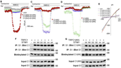
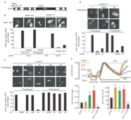

Before 2014
Selected Publications
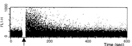
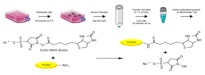

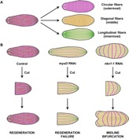
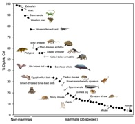
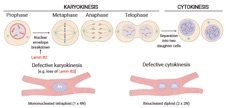
See complete publications at National Library of Medicine here
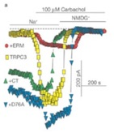

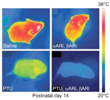
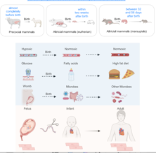
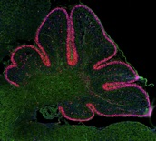


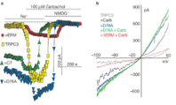